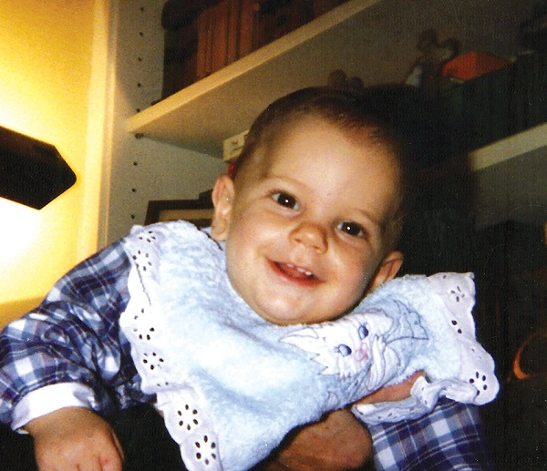
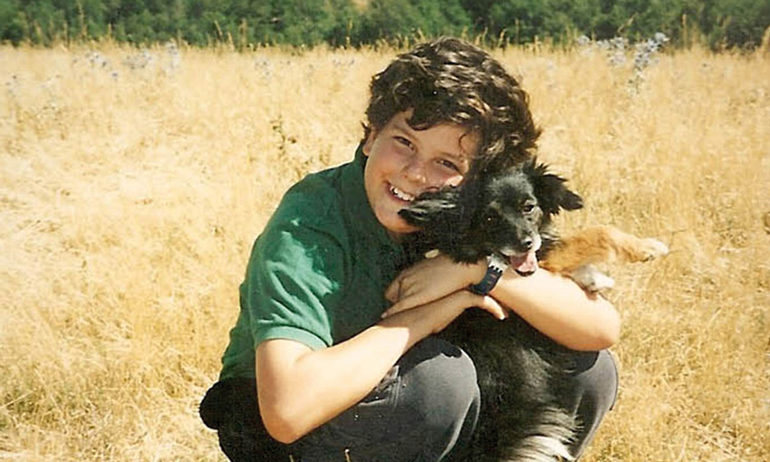
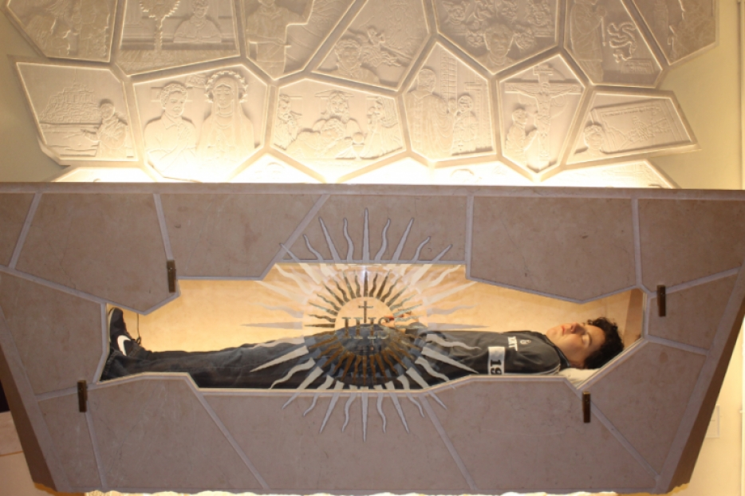
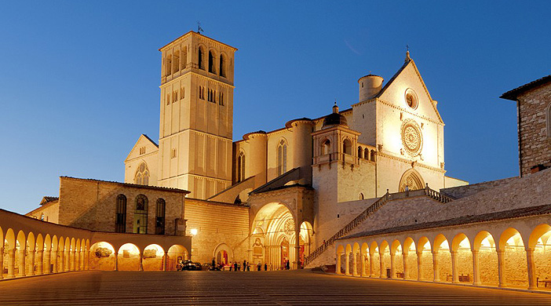
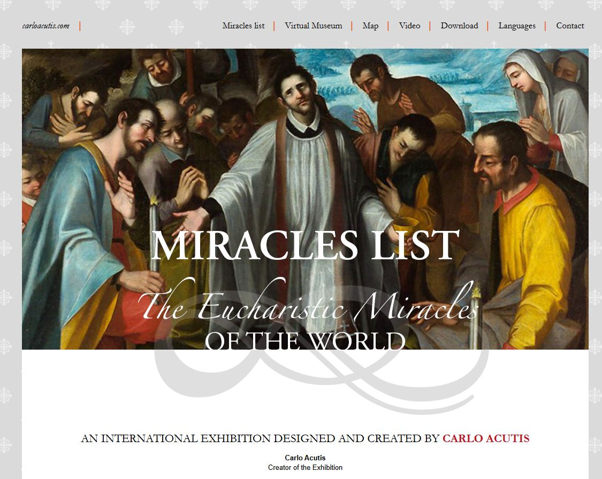
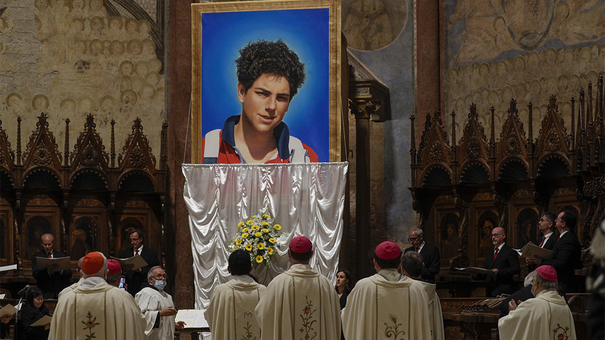
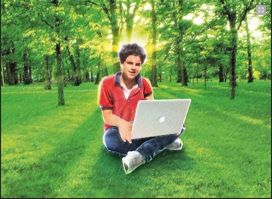

"Az Eucharisztia az én autópályám a Mennyországba."
Londoni születésű olasz honlaptervező, aki leginkább arról ismert, hogy dokumentálta az eucharisztikus csodákat és Mária-jelenéseket, és katalogizálta azokat egy honlapon. Carlo Acutis személyes honlapja.
Carlo Acutis 1991. május 3-án született Londonban, Angliában, gazdag olasz családból származó Andrea Acutis és Antonia Salzano gyermekeként. Az Acutis család kiemelkedő pozíciót töltött be az olasz biztosítási iparban. A Salzano család egy kiadóvállalatot vezetett. Acutis anyai dédnagyanyja az Egyesült Államokban született, és egy New York-i földbirtokos családból származott. Keresztelésére 1991. május 18-án került sor a chelsea-i Fájdalmas Szűzanya-templomban. Keresztapja apai nagyapja, Carlo, keresztanyja pedig anyai nagyanyja, Luana volt. Első dadája egy fiatal skót nő volt, aki egyszer egy kis alkoholt adott neki, hogy segítsen neki elaludni. Egyik szülő sem volt vallásos, és Carlo születése előtt Londonban és Németországban dolgoztak. A család 1991 szeptemberében, nem sokkal Carlo születése után Milánóba költözött. Mindkét szülő a családjuk vállalkozásában kezdett dolgozni, Acutisra pedig egy új ír dadus vigyázott.

Acutis első osztályos iskolája, a San Carlo Intézet, Milánó egyik legelitebb iskolája volt. A fiú 1997 szeptemberében kezdte meg tanulmányait, de az iskola messze volt az otthonuktól, ezért három hónappal később átkerült a Marcelline Tommaseo Intézetbe, amely némileg közelebb volt. Az iskolába vezető séták során különös érdeklődést mutatott az útközben megismert házmesterek iránt, akiknek többsége nem volt olasz. Miután megtanulta a nevüket, minden reggel megállt személyesen köszönteni őket.

2002 szeptemberétől a Szent Marcellina nővérek által fenntartott Marcelline Tommaseo Intézetben részesült középiskolai oktatásban, majd a jezsuita XIII. Leó pápa gimnáziumba járt. Átlagos tanuló volt, de szeretett olvasni és önállóan tanulmányozni az őt érdeklő területeket, köztük az informatikát. Saját maga erejéből megtanult szaxofonozni is. Volt egy korrepetitora, aki segített neki a házi feladataiban, és végül a templomba is követte.
2006. október 1-jén Carlonál torokgyulladás alakult ki. A szülei elvitték egy orvoshoz, aki parotitist és kiszáradást állapított meg nála, de néhány nappal később a fájdalom erősödött" Acutist egy vérbetegségekre szakosodott klinikára vitték, és akut promilocitális leukémiát diagnosztizáltak nála. Carlo 2006. október 12-én, 18:45-kor halt meg. 15 éves volt halálakor.

Acutis utolsó kívánsága volt, hogy halála után Assisiben temessék el.

„Carlo egy kivételesen nyitott fiatalember volt. Tényleg fejlődni akart a szülei, Isten, az osztálytársai és azok szeretetében, akik kevésbé szerették őt. Tanulmányai során is igyekezett odatenni magát, hogy a katekizmus órán, valamint az iskolában és az informatikában is képezze magát."
Acutis 1998. június 16-án, hétéves korában részesült elsőáldozásban a milánói Sant'Ambrogio ad Nemus kolostorban. Ezt követően a szentmise előtt vagy után igyekezett elmélkedni a tabernákulum előtt. Carlo gyakori szentáldozó lett, gyakran részt vett az eucharisztikus szentségimádáson, és heti rendszerességgel gyónt. 2003. május 24-én bérmálkozott a Saint-Marie Secrete templomban. Számos példakép vezérelte életét, különösen Assisi Ferenc, valamint Francisco és Jacinta Marto, Savio Szent Domonkos, Szent Tarzíciusz, Bernadette Soubirous és Pazzi Szent Mária Magdolna. Gyakran járt egyedül templomba. Gyakran imádkozott őrangyalához, és különleges áhítattal volt Szent Mihály arkangyal iránt.
A körülötte élők "kockának" tartották a számítógépekkel és az internettel kapcsolatos szenvedélye és jártassága miatt. Jártas volt a Dreamweaver, a Java, a C++ és az Ubuntu használatában. Gyakran segített másoknak technikai kérdésekben. Amikor 14 éves volt, a plébánosa megkérte, hogy készítsen egy weboldalt a milánói Santa Maria Segreta plébánia számára. Ezt követően a gimnáziumának papja kérte meg, hogy készítsen egy weboldalt az önkéntesség népszerűsítésére, amin Acutis 2006 nyarának nagy részét dolgozott. Ezzel a munkával megnyerte a "Sarai volontario" (Önkéntes leszel) elnevezésű országos versenyt.
Mivel Carlo látta, hogy a hitet új módon kell átadni a fiatalabb generációnak, egy olyan honlap létrehozására vállalkozott, amely a világ minden egyes bejelentett eucharisztikus csodáját, valamint a katolikus egyház által jóváhagyott Mária jelenések listáját tartalmazza. Nagyra értékelte Boldog Giacomo Alberione kezdeményezéseit, hogy a médiát az evangelizációra és az evangélium hirdetésére használja, és az általa létrehozott weboldallal is ezt kívánta tenni. Carlót a Lancia, a Ferrari és a Maserati olasz formatervei ihlették, amelyek az autókon kívül művészeti alkotások is. Miután részt vett a Rimini Találkozón, amely nem messze az autógyáraktól zajlott, azon kezdett el gondolkodni, hogy az egyház miért nem tudja jobban bemutatni Krisztust és az Egyházat. Acutis 2004-ben indította el a weboldalt, és két és fél évig dolgozott rajta, az egész családját bevonva a projektbe.

A honlapot 2006. október 4-én, Szent Ferenc ünnepén mutatták be, néhány nappal a halála előtt. Acutis nem tudott részt venni a római Borromeo Szent Károly templomban rendezett kiállításának bemutatóján, mivel kórházba került. A tárlatot középiskolájában, a XIII. Leó Intézetben is bemutatták.
2019. november 14-én a vatikáni Szentek Ügyeinek Kongregációjának Orvosi Tanácsa pozitívan nyilatkozott egy Brazíliában történt csodáról, amelyet Acutis közbenjárásának tulajdonítottak. Luciana Vianna egy imaórára vitte fiát, Mattheust, aki hasnyálmirigy-rendellenességgel született, ami megnehezítette az evést. Vianna már előzőleg imádkozott egy novénát, amelyben a tinédzser Acutis közbenjárását kérte. Az istentisztelet alatt a fia azt kérte, hogy "ne hányjon annyit". Közvetlenül az istentisztelet után Mattheus elmondta az édesanyjának, hogy meggyógyultnak érzi magát, és szilárd ételt kért, amikor hazaérkezett. Addig kizárólag folyékony étrendet tartott. Részletes vizsgálat után Ferenc pápa 2020. február 21-én dekrétumban erősítette meg a csoda hitelességét, ami Acutis boldoggá avatásához vezetett.

2024. május 23-án Ferenc pápa elismert az Aticus közbenjárásank tulajdonított posztumusz csodát, ezért jogosult a szentté nyilvánításhoz. A szentté avatás időpontja 2025. április 26. Acutis lesz az első szent az Y generációból. Acutis azután került a szentté avatás útjára, hogy a pápa már 2020-ban jóváhagyott egy neki tulajdonított csodát: egy hétéves brazil kisfiú a család hite szerint Acutis közbenjárása révén gyógyult meg, miután egy pap imádkozott Acutishoz a gyermekért. Az ő közbenjárásának tulajdonított, újonnan elismert csoda 2022-ben történt, amikor egy Valeria nevű Costa Rica-i nő leesett a kerékpárjáról, és agyvérzést szenvedett, az orvosok pedig kevés esélyt adtak neki a túlélésre. Valeria édesanyja, Lilliana, Acutis közbenjárásáért imádkozott, és meglátogatta a sírját. Még aznap Valeria újra önállóan kezdett lélegezni, és másnap már járni is tudott, a vérzés minden jele eltűnt.
